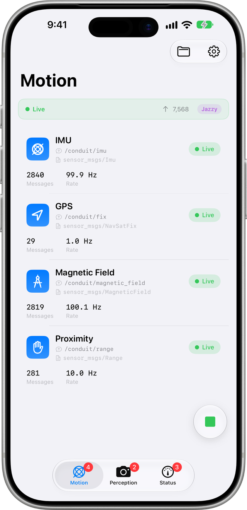
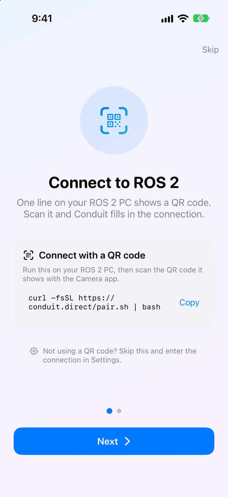
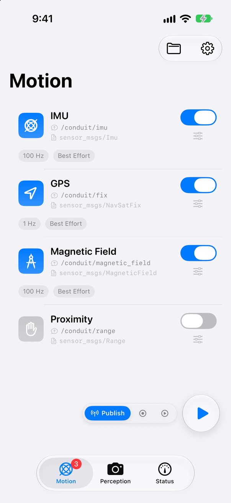
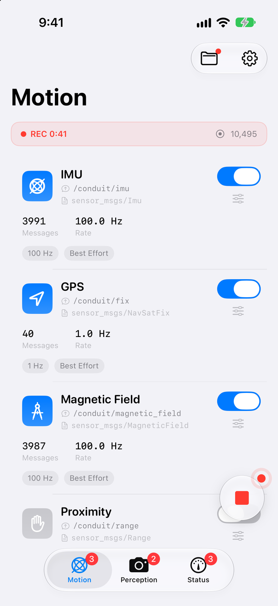
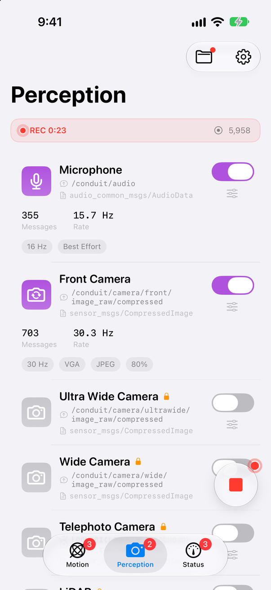
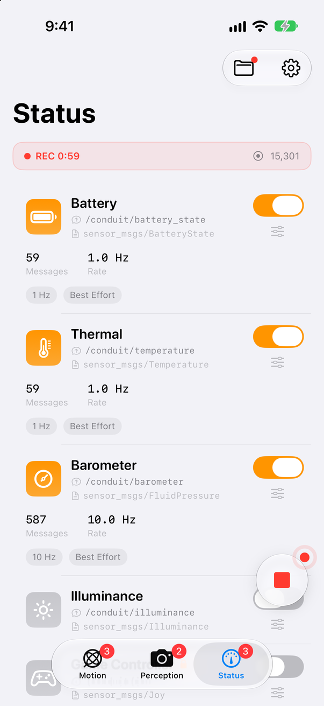
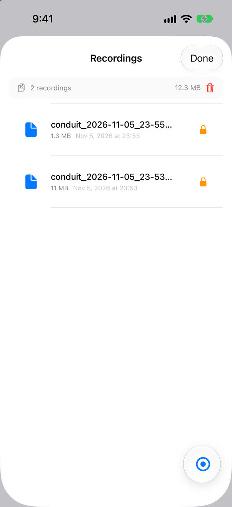
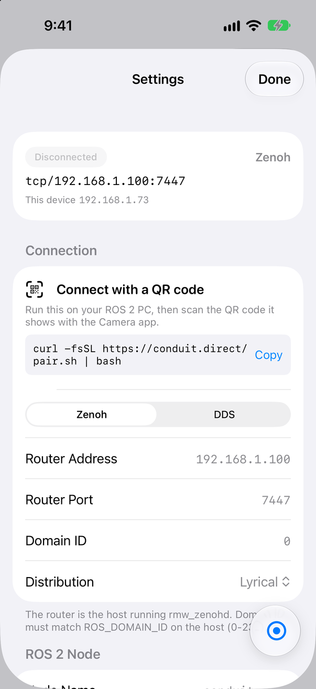
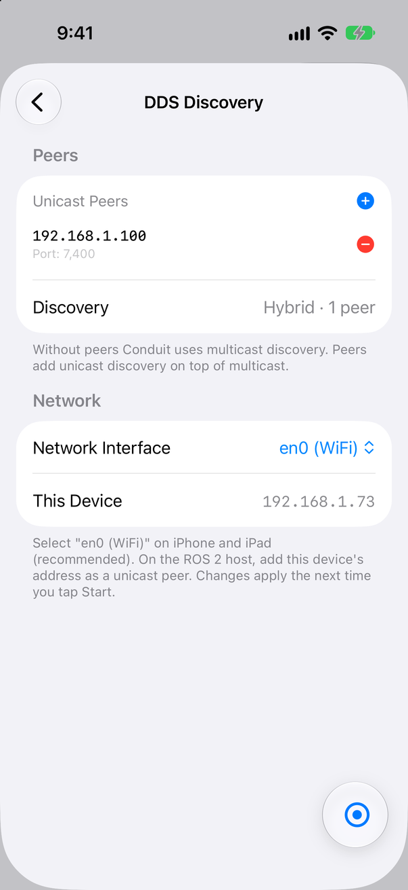

Conduit
Publish 13 sensors of your iPhone, iPad or Mac to ROS 2: camera, LiDAR, IMU, GPS and more, over Zenoh or DDS, with no bridge.
Downloaded over 10,000 times. Ranked as high as #4 in Developer Tools on the Japanese App Store.
- /conduit/audio
- /conduit/barometer
- /conduit/battery_state
- /conduit/camera/wide/image_raw/compressed
- /conduit/fix
- /conduit/illuminance
- /conduit/imu
- /conduit/joy
- /conduit/magnetic_field
- /conduit/points
- /conduit/pose
- /conduit/range
- /conduit/temperature
- /tf
- /tf_static

Conduit publishes the sensors of your Apple device to a ROS 2 graph over Zenoh or DDS. No bridge, no rcl / rclcpp, nothing to build on the device. Scan a QR code from your ROS 2 PC and the topics show up in ros2 topic list.
Conduit has been downloaded over 10,000 times and has ranked as high as #4 in Developer Tools on the Japanese App Store.
Get started
- Install Conduit from the App Store.
- On your ROS 2 PC (Ubuntu, RHEL or Fedora, with ROS 2 sourced), run:
The script checks the setup and shows a QR code.
curl -fsSL https://conduit.direct/pair.sh | bash - Scan the QR code with the iPhone's Camera app. Conduit opens and fills in the connection settings.
- Turn on sensors and tap Start, then check on the PC:
ros2 topic echo /conduit/imu
QR pairing needs Conduit 2.6.0 or later. See Connect with a QR code for the requirements, Tailscale and troubleshooting.
Set up by hand: Zenoh
- Start the Zenoh router on your ROS 2 PC:
source /opt/ros/lyrical/setup.bash # or jazzy / humble / … export RMW_IMPLEMENTATION=rmw_zenoh_cpp export ROS_DOMAIN_ID=0 # 0-232 ros2 run rmw_zenoh_cpp rmw_zenohd - In Conduit, open Settings: Transport Zenoh, Router Address the PC's IP, Router Port
7447, Domain ID the same as the PC, and Distribution your ROS 2 release (Lyrical for new installs). Tap Done. - Turn on sensors and tap Start.
- Check:
ros2 topic echo /conduit/imu
Set up by hand: DDS (CycloneDDS)
- On your ROS 2 PC, add the iPhone as a discovery peer and restart the ROS 2 daemon:
Settings → Discovery → This Device in Conduit shows the iPhone's address.
source /opt/ros/lyrical/setup.bash # or jazzy / humble / … export RMW_IMPLEMENTATION=rmw_cyclonedds_cpp export ROS_DOMAIN_ID=0 # 0-232 export CYCLONEDDS_URI='<CycloneDDS><Domain><Discovery><Peers><Peer address="IPHONE_IP"/></Peers></Discovery></Domain></CycloneDDS>' ros2 daemon stop - In Conduit, open Settings: Transport DDS, Domain ID the same as the PC, Distribution your ROS 2 release. In Discovery, add the PC's IP under Peers and pick en0 (WiFi) as the Network Interface. Tap Done.
- Turn on sensors and tap Start.
- Check:
ros2 topic echo /conduit/imu --qos-reliability best_effort
Run ros2 daemon stop again whenever you change RMW_IMPLEMENTATION, ROS_DOMAIN_ID or CYCLONEDDS_URI: the daemon keeps its first settings. See Troubleshooting.
Demo videos
|
Getting Started Connect Conduit to your ROS 2 system step by step |
Camera & LiDAR Stream camera images and LiDAR point clouds to ROS 2 |
Teleoperation Drive a robot with a game controller through ROS 2 Joy messages |
|
Cyclone DDS Talk to ROS 2 over Cyclone DDS, with no Zenoh router |
MCAP Recording Record every topic to an MCAP file for Foxglove or ros2 bag |
Coming in Conduit 3: Robots
Conduit 3 subscribes as well as publishes: watch a robot's camera, map and diagnostics, and drive it from the phone. See Robots.
|
Drive a mobile robot Drive a robot through its own camera from your iPhone |
Move a robot arm Move a MoveIt Servo arm by moving your iPhone |
What Conduit publishes
13 sensors
- Motion: IMU (100 Hz) · Magnetometer (100 Hz) · GPS (1 Hz) · Proximity (10 Hz) · Device Pose (60 Hz, Conduit 3)
- Perception: Camera (30 Hz) · LiDAR (30 Hz, point cloud or depth image) · Microphone (
audio_common_msgs/AudioData) - Environment: Barometer (10 Hz) · Illuminance (10 Hz) · Thermal (1 Hz)
- Input: Game Controller (
sensor_msgs/Joy, 50 Hz, Reliable) - Status: Battery (1 Hz)
Every topic, message type and frame: Sensors and topics.
| Device | Sensors |
|---|---|
| iPhone (iOS 16+) | All 13. LiDAR on Pro models (iPhone 12 Pro and later) |
| iPad (iPadOS 16+) | All except Proximity. LiDAR on iPad Pro (2020 and later) |
| Mac (macOS 13+, Mac Catalyst) | Camera, Microphone, Battery, Thermal, Game Controller |
Transports
| Transport | ROS 2 RMW | Router required | Best for |
|---|---|---|---|
| Zenoh | rmw_zenoh_cpp |
Yes (rmw_zenohd) |
Across subnets, over Tailscale, networks without multicast |
| DDS | rmw_cyclonedds_cpp |
No | One LAN, an existing CycloneDDS setup |
See Zenoh or DDS.
MCAP recording
Record every topic to an MCAP file and open it in Foxglove or replay it with ros2 bag play. Recording is free and works without a network: pick Record instead of Publish next to the Start button. The message schemas are written into the file, so it opens without your .msg files. See Recording (MCAP).
In-app purchases
IMU, Magnetometer, GPS, Proximity, Barometer, Illuminance, Thermal, Battery, Microphone, the front camera and MCAP recording are free. One-time purchases unlock the Back Cameras (Wide, Ultra Wide and Telephoto), LiDAR, Game Controller, Background Mode and Recording Export (sharing recordings off the device).
Screenshots
|
 Connect Run one line on your ROS 2 PC and scan the QR code it shows |
 Pick sensors Turn sensors on, choose Publish, Record or Both, and tap Start |
 Motion IMU, GPS, Magnetic Field and Proximity with live rates |
 Perception Microphone, cameras and LiDAR |
|
 Status Battery, Thermal, Barometer, Illuminance and Game Controller |
 Recordings MCAP files on the device, behind the folder button |
 Settings Transport, router, Domain ID and Distribution |
 DDS Discovery Peers and network interface for DDS |
Docker test environments
Zenoh router (Docker)
Pre-built images on ghcr.io:
# ROS 2 Lyrical
docker run -d -p 7447:7447 --name ros_lyrical_zenoh ghcr.io/youtalk/conduit-support:lyrical
# ROS 2 Jazzy
docker run -d -p 7447:7447 --name ros_jazzy_zenoh ghcr.io/youtalk/conduit-support:jazzy
# ROS 2 Humble
docker run -d -p 7447:7447 --name ros_humble_zenoh ghcr.io/youtalk/conduit-support:humble
Or with Docker Compose:
git clone https://github.com/youtalk/conduit-support.git
cd conduit-support/docker
# Default domain ID (0)
docker compose up ros-lyrical -d
# Custom domain ID via .env (recommended for persistence)
echo "ROS_DOMAIN_ID=5" > .env
docker compose up ros-lyrical -d
# Or override per-invocation
ROS_DOMAIN_ID=5 docker compose up ros-lyrical -d
# Stop
docker compose down
DDS subscriber (Docker, Linux only)
macOS note: Docker Desktop on macOS does not provide true host networking, so the container cannot receive DDS traffic from an iPhone on the same LAN. On macOS, run your DDS subscriber natively or in a Parallels/UTM VM.
cd conduit-support/docker
echo "ROS_DOMAIN_ID=0" > .env
docker compose -f compose-dds.yml up ros-lyrical-dds -d
# Verify
docker exec -it ros_lyrical_dds bash
source /opt/ros/lyrical/setup.bash
ros2 topic list
ros2 topic echo /conduit/imu --qos-reliability best_effort
See docker/README.md for the complete Docker guide.
Built on swift-ros2
All of Conduit's ROS 2 work (Zenoh and DDS transports, the CDR codec, the Humble to Rolling wire formats, publishers and subscriptions) is done by swift-ros2, a native Swift client library for ROS 2 that started inside Conduit. To put ROS 2 in your own Swift app, use swift-ros2 directly: it runs on iOS, iPadOS, macOS, Mac Catalyst and visionOS, and builds from source on Linux, Windows and Android.
Documentation
- Connect with a QR code: the fastest way to connect
- Zenoh or DDS: which transport to use
- Platform notes: what each device supports
- Sensors and topics: every topic, message type, rate and frame
- Recording (MCAP): record, open and share MCAP files
- On-demand capture: publish only when subscribed
- Game controller teleop: drive a robot with
teleop_twist_joy - Robots: coming in Conduit 3
- FAQ, Troubleshooting, Known issues
- Privacy policy